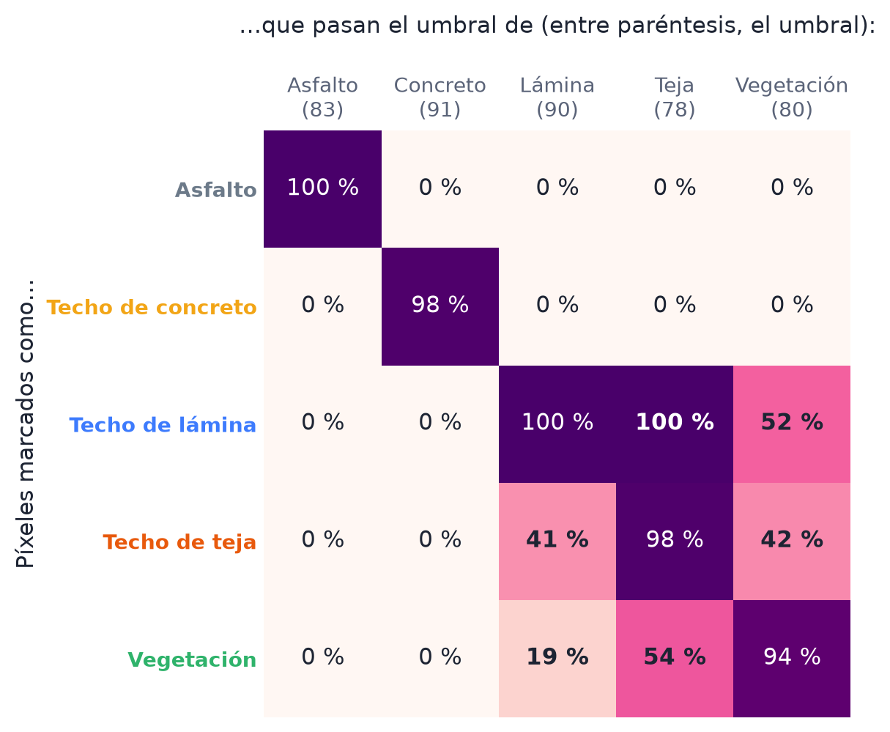
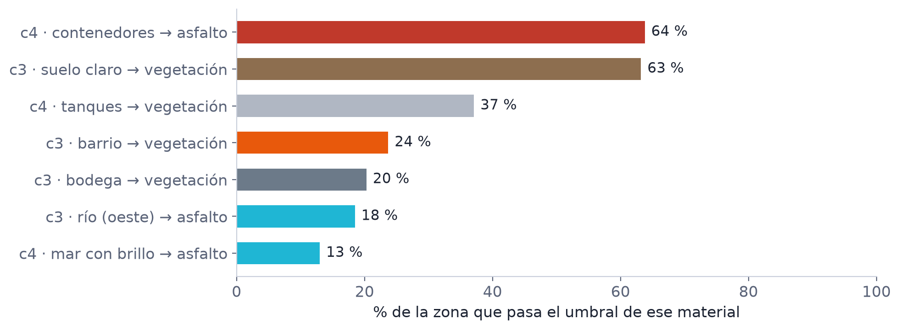

Reporte del proyecto: identificación con la longitud de arco de la firma espectral · octubre de 2026
Manuel Amell y Samuel Cogollo
Saber qué material hay en cada píxel de una imagen, reconociéndolo por la forma de su firma espectral y midiendo esa forma con la longitud de arco. Quisimos mantenerlo simple: seguir el cuaderno original y cambiar solo lo necesario.
Son 4 imágenes hiperespectrales de Cartagena de 750 × 750 píxeles y 380 bandas (855 MB cada una).
Los puntos de muestra llegaron en archivos sueltos de distintos formatos (txt, csv, xlsx y docx). Los ordenamos en una carpeta por imagen
(imagen/, recuadros/, muestras/, puntos/ y originales/) sin borrar los originales.
Cada píxel se resume en 2 números: cuánto sube y baja su firma en 2 tramos de bandas, L = Σ |R(i+1) − R(i)|. Los comparamos con los
2 números de la firma promedio del material (similitud = 100·(1 − |A−B| / (|A|+|B|))) y pintamos el píxel si llega al umbral.
El paso a paso, con figuras, está en el documento "Cómo reconocemos materiales con la longitud de arco".
Medidas que usamos: la exactitud son los aciertos sobre el total, la precisión es, de lo que pintamos, cuánto era del material, y la sensibilidad es, de lo que era del material, cuánto pintamos.
| Herramienta | Para qué |
|---|---|
generar_notebooks.py | Arma un notebook por imagen con el método del cuaderno original. Para el agua lee recuadros; con --muestras lee los materiales nuevos y los compara entre sí. |
marcar_recuadros.py | Marcar recuadros de muestra con el mouse sobre la imagen (OpenCV). |
| ImageJ | Marcar los píxeles de los materiales nuevos y exportarlos en CSV (x,y). |
| GitHub | Guardamos el trabajo en github.com/ManuelAmell/Imagenes-Espectrales. Samuel subió sus muestras en su propia rama y después se unieron. |
Aplicamos el método a todos los materiales con los puntos que llegaron. En esta etapa solo mirábamos la exactitud. Esos notebooks ya no están en el proyecto, porque después cambiamos la forma de tomar las muestras.
| Imagen | Material | Exactitud | % de la imagen marcado | Cómo se veía |
|---|---|---|---|---|
| c4 | Agua salada | 0,86 | 39 % | Bien |
| c2 | Agua salada | 0,75 | 58 % | Bien |
| c3 | Agua dulce | 0,95 | 31 % | Bien |
| c3 | Vegetación | 0,50 | 69 % | También marcaba los barrios |
| c2 | Contenedores | 0,67 | 39 % | Zonas mezcladas |
| c4 | Contenedores | 0,60 | 58 % | Marcaba toda la tierra |
| c1 | Techos no metálicos | 0,69 | 99 % | Marcaba casi toda la imagen |
Solo el agua pasó de 0,7, así que nos quedamos con ella y buscamos por qué fallaba lo demás.
Vimos que varios puntos de "agua" caían en tierra. Marcamos a mano recuadros donde seguro había agua, y otros donde seguro no.
| Imagen | Material | Precisión | % marcado |
|---|---|---|---|
| c4 | Agua salada | 0,98 | 42 % |
| c3 | Laguna café | 0,94 | 27 % |
| c3 | Río | 0,50 | 97 % |
| c2 | Agua salada | 0,53 | 88 % |
Antes de tomar el mínimo descartamos las muestras cuya similitud queda por debajo de Q1 − 1,5·(Q3 − Q1), la regla del diagrama de caja. Si no hay ruido no se quita nada. El umbral sigue siendo el mínimo, pero de muestras limpias.

| Imagen | Material | Precisión antes y después | % marcado antes y después |
|---|---|---|---|
| c3 | Río | 0,50 y 1,00 | 97 % y 19 % |
| c2 | Agua salada | 0,53 y 0,84 | 88 % y 49 % |
| c3 | Laguna café | 0,94 y 0,98 | 27 % y 11 % |
| c4 | Agua salada | 0,98 y 1,00 | 42 % y 39 % |


Antes el agua parecía mejor porque con el umbral bajo pasaba todo: también los píxeles con olas y brillo, y la tierra (el río pintaba el 97 % de la imagen). Ahora el umbral es más exigente y casi no se pinta tierra, pero algunos píxeles de agua con olas o reflejos quedan sin pintar y se ven como puntos (la sensibilidad baja de 1,00 a entre 0,92 y 0,98). Se ve menos lleno, pero tiene menos errores.
Con muestras nuevas, marcadas en ImageJ, sumamos asfalto, techos (lámina, teja y concreto) y vegetación. Como no hay un "otros" para cada material, cada uno se compara con los demás de su imagen, y al final cada píxel se pinta con el material más parecido. Resultados, ya con la limpieza de atípicas:
| Imagen | Material | Precisión | % marcado |
|---|---|---|---|
| c1 | Asfalto | 1,00 | 17 % |
| c1 | Techo de concreto | 1,00 | 14 % |
| c1 | Techo de lámina | 0,77 | 11 % |
| c1 | Techo de teja | 0,56 | 30 % |
| c1 | Vegetación | 0,72 | 12 % |
| c3 | Asfalto | 1,00 | 4 % |
| c3 | Vegetación | 1,00 | 51 % |
| c4 | Asfalto | 1,00 | 35 % |
| c4 | Techo de concreto | 0,98 | 6 % |
| c4 | Vegetación | 0,56 | 16 % |


Medimos qué porcentaje de los píxeles de cada material pasa el umbral de otro material (herramientas/analizar_confusiones.py).
Encontramos 4 causas:
| Causa | Lo que medimos | Por qué pasa |
|---|---|---|
| Mira la forma, no el brillo | En c1, el 100 % de la lámina pasa como teja y el 52 % como vegetación. En c3, el 18 % de una zona del río pasa como asfalto | Esos materiales suben y bajan parecido (longitudes de arco cercanas) aunque su brillo es muy distinto (0,31, 0,27 y 0,17), y el brillo no se usa. Agua y asfalto tienen curvas casi planas |
| Muestras variadas, umbral bajo | La teja de c1 (umbral 78, el más bajo de la imagen) pinta el 30 %. La vegetación de c4 (umbral 69) acepta el 98 % del concreto | El umbral es la peor muestra limpia: si las muestras son muy distintas entre sí, baja y entran otros materiales |
| Lo que no se marcó | En c4, el 64 % de los contenedores pasa como asfalto. En c3, el 63 % del suelo claro como vegetación | El método solo conoce los materiales que marcamos; lo demás se lo queda el más parecido |
| Métricas optimistas | Precisión de 1,00 en c3 con solo 2 materiales; el asfalto de c1 se probó con 21 píxeles | Cada material se compara solo con los que se marcaron en su imagen, y con pocas muestras la prueba es pequeña |



Además, el pintado es lento porque recorre los 562.500 píxeles uno por uno con bucles de Python.
Una mejora posible sería usar el brillo como tercer número junto a las 2 longitudes de arco. También ayudaría marcar los materiales que faltan y separar en dos los materiales muy variados, por ejemplo vegetación al sol y a la sombra, para que su umbral no baje tanto.
Resumir la firma de cada píxel en 2 longitudes de arco sirve para separar materiales con formas muy distintas, como el agua, el asfalto y el concreto, siempre que las muestras estén limpias. Quitar las muestras atípicas antes de tomar el mínimo fue el cambio que más mejoró el resultado: el agua pasó de fallar a identificarse bien en las 3 imágenes. En cambio, materiales parecidos como la lámina, la teja y la vegetación se confunden, porque el método no mira el brillo.